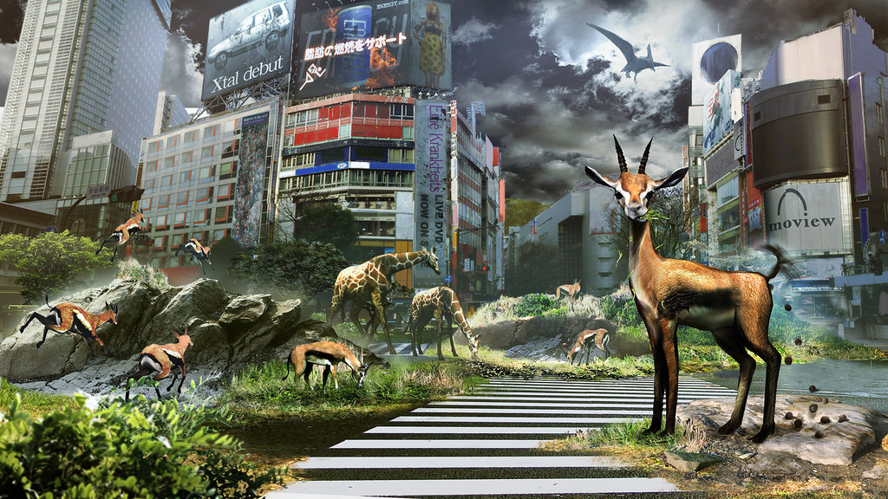
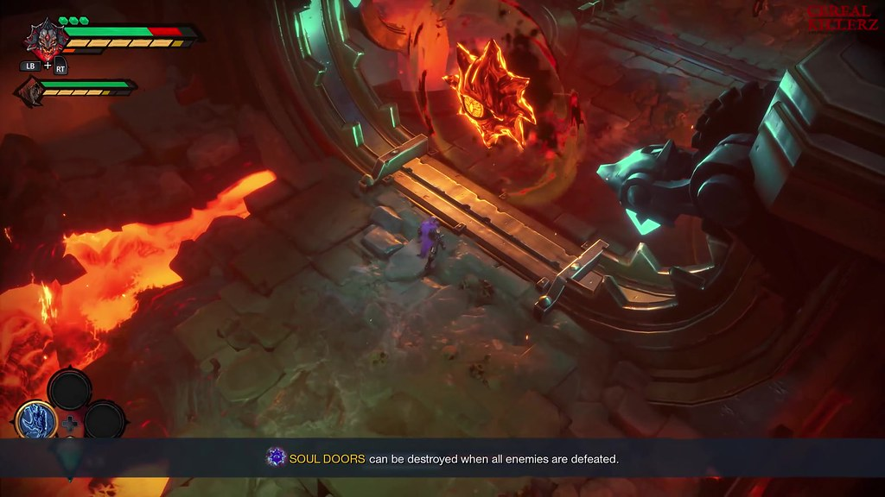
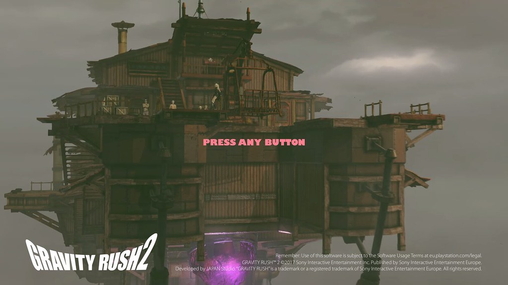

Japan Studio has made a plethora of amazing games, here are some of them.
Tokyo Jungle is a survival-action game that takes place in deserted, futuristic Tokyo, in which the city has transformed into a vicious wildlife wasteland.
Demon's Souls is an action role-playing game in which the player takes on the role of an adventurer exploring the cursed land of Boletaria.
Gravity Rush is an action-adventure game in which players take the role of a young woman who can manipulate how gravity affects her.
